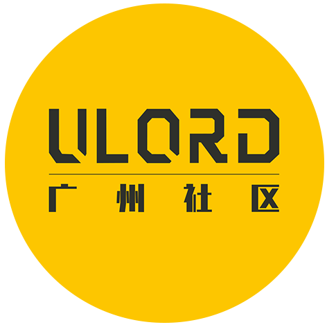

精读Ulord白皮书活动
Ulord是一条点对点价值传递公链，通过搭建区块链底层架构和数字资源分发协议，支持第三方开发商在其开源协议之上构建自己的应用程序，与众多行业合作伙伴一起形成区块链技术与应用的完整生态。 基于Ulord创建的各种规则和协议，嫁接包括文字、图片、音乐、视频、软件等在内的各类数字资源应用场景，为信息创造者与消费者提供直接的对接平台。 第三方开发商可以发行代币，构建自己的经济体系，也可以围绕Ulord重点打造各类应用，使用Ulord中的UlordToken作为系统内凭证。 区别以往信息传递要借助平台或其他中心化机构才能进行传播获利这一模式，去除中间环节，信息提供者与消费者直接通过Ulord平台对接，保证了原创者利益的最大化。 ------《Ulord白皮书》

广州站
深圳站